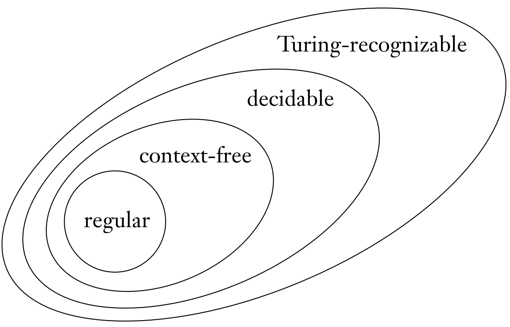

Homework 8
Last updated: Mon, 8 Apr 2024 12:09:58 -0400
Out: Mon Apr 08, 12:00pm EST (noon) Due: Wed Apr 17, 12:00pm EST (noon)
This assignment continues to study Turing Machines, and in particular deciders.
Homework Problems
A Decidable Language (12 points)
A Language of DFAs (12 points)
Regular Languages vs Decidable Languages (12 points)
Computing Chomsky Normal Form (12 points)
README (2 point)
Total: 50 points
Submitting
Submit your solution to this assignment in Gradescope hw8. Please assign each page to the correct problem and make sure your solutions are legible.
A submission must also include a README containing the required information.
1 A Decidable Language
Prove that the following language is a decidable language:
L_{grad} = \{w\mid w\textrm{ is a three-digit grad-level UMB course number}\}
You may assume that strings in the language are drawn from alphabet \{\texttt{0},\texttt{2},\texttt{4}, \texttt{6}\}.
If your answer involves a decider, its definition must include a termination argument.
Also, for this problem, the decider must use at least one machine we have previously defined in lecture or homework. (Remember that when creating new Turing machines, all other machines or algorithms previously constructed in class or in previous homeworks are available as a "library"!)
Finally, make sure your proof includes the necessary Equivalence Table with the appropriate columns (e.g., whether strings are in the language, whether strings are accepted by the decider, etc.).
2 A Language of DFAs
Prove that the following language is a decidable language:
\textrm{GRAD}_{\textsf{DFA}} = \left\{\left\langle D\right\rangle\mid D\textrm{ is a DFA accepting three-digit strings representing UMB grad courses}\right\}
If your answer involves a decider, its definition must include a termination argument.
Also, for this problem, the decider must use at least one machine we have previously defined in lecture or homework. (Remember that when creating new Turing machines, all other machines or algorithms previously constructed in class or in previous homeworks are available as a "library"!)
Finally, make sure your proof includes the necessary Equivalence Table with the appropriate columns (e.g., whether strings are in the language, whether strings are accepted by the decider, etc.).
3 Regular Languages vs Decidable Languages

Prove that the "regular" and "decidable" ovals in the language Venn Diagram from class are "correct" with respect to each other.
The "decidable" oval is bigger than the "regular" one.
The "regular" oval is completely inside the "decidable" one.
Give the formal statement to prove.
Prove the formal statement.
4 Computing Chomsky Normal Form
Recall that a CFG is in Chomsky Normal Form (CNF) if all rules have the form:
A \rightarrow BC |
A \rightarrow \texttt{a} |
where \texttt{a} must be a terminal, A, B, C are variables, and B and C are not the start variable.
In addition, a grammar in CNF may include a rule A\rightarrow \varepsilon if A is the start variable.
Convert the following context-free grammar to Chomsky Normal Form using the algorithm described in class.
S\rightarrow \texttt{0} T \texttt{1}
T\rightarrow \texttt{0}T\mid \varepsilon
S\rightarrow \texttt{\#}
The start variable of the CFG is S and the set of terminals is \{\texttt{0},\texttt{1},\texttt{\#}\}